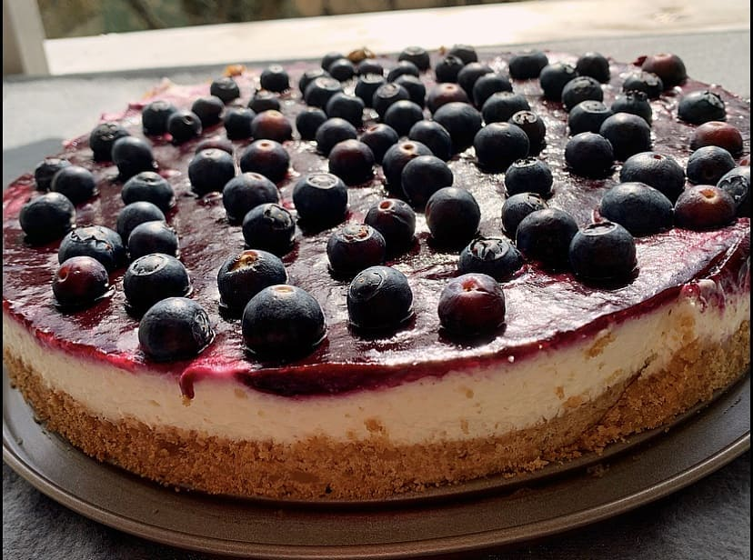

Philadelphia Cheesecake

Ingredients:
- nonstick cooking spray, for greasing
- 250g graham cracker
- 100g sugar
- 70g unsalted butter, melted
- 500g cream cheese
- 150g white chocolate
- 200ml heavy cream
- 4 large eggs
Time: 45 minutes
Steps:
- Preheat the oven to 350˚F (180˚C). Grease a 10-inch (25 cm) springform pan with nonstick spray. Line the inside edges of the pan with parchment paper.
- In the bowl of a food processor, combine the graham crackers, 1 tablespoon of sugar, and the melted butter. Pulse to combine until the texture is similar to wet sand.
- Press the graham cracker crumbs into the prepared pan, using a measuring cup to compact in even layer.
- Bake for 8-10 minutes, until golden brown. Transfer to a wire rack and let cool to room temperature.
- Once cool, line the sides of the springform pan with parchment paper.
- In a large bowl, combine the cream cheese, remaining 2 cups (400 G) of sugar, and the salt. Using an electric hand mixer, blend until well-combined and fluffy.